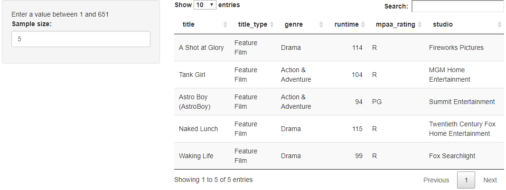
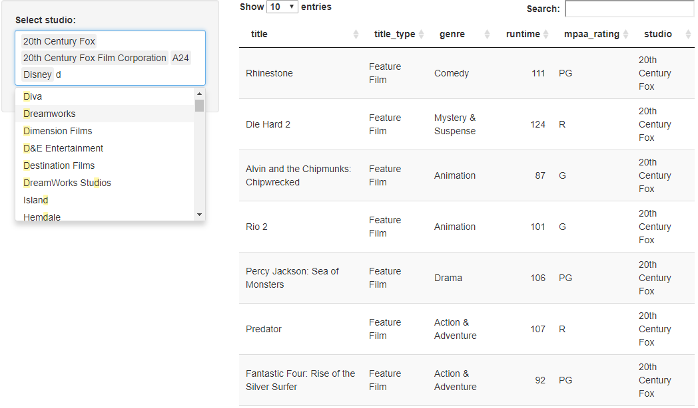
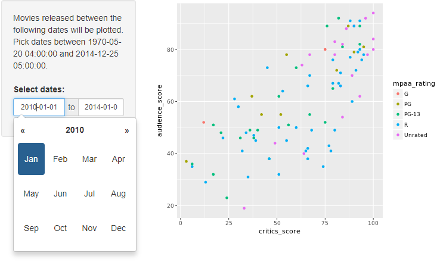
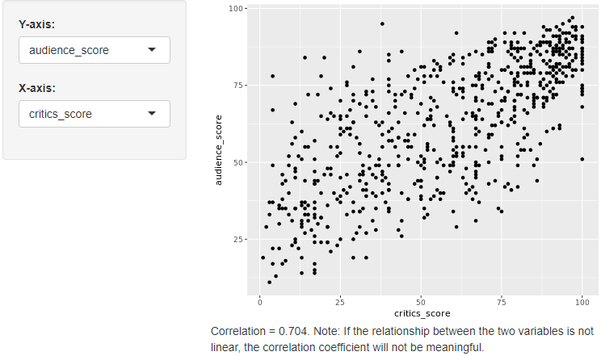
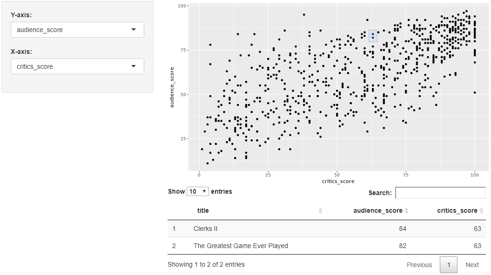
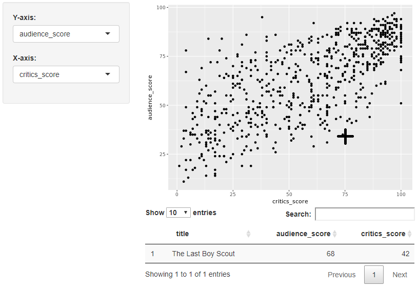
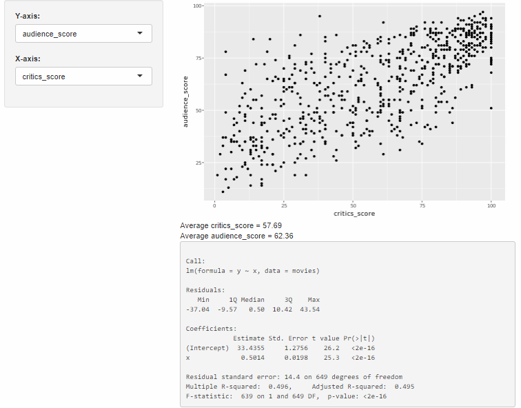
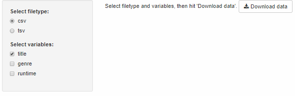

Inputs, Outputs, and Rendering Functions
Reactive FlowLink
Suppose you have a slinderInputin your app with the inputId="alpha". The value of this input is stored in input$alpha so when the user moves around the slider the value of the alphainput is updated in th einput list. Reactivity automatically occurs when an input value is used to render an output object.
1 2 3 4 5 6 7 8 9 10 11 12 13 14 15 16 17 18 19 20 21 22 23 24 25 26 27 28 29 30 31 32 33 34 35 36 37 38 39 40 41 42 43 44 45 46 47 48 49 50 51 | library(shiny) library(ggplot2) load(url("http://s3.amazonaws.com/assets.datacamp.com/production/course_4850/datasets/movies.Rdata")) # Define UI for application that plots features of movies ui <- fluidPage( # Sidebar layout with a input and output definitions sidebarLayout( # Inputs sidebarPanel( # Select variable for y-axis selectInput(inputId = "y", label = "Y-axis:", choices = c("imdb_rating", "imdb_num_votes", "critics_score", "audience_score", "runtime"), selected = "audience_score"), # Select variable for x-axis selectInput(inputId = "x", label = "X-axis:", choices = c("imdb_rating", "imdb_num_votes", "critics_score", "audience_score", "runtime"), selected = "critics_score"), # Set alpha level sliderInput(inputId = "alpha", label = "Alpha:", min = 0, max = 1, value = 0.5) ), # Outputs mainPanel( plotOutput(outputId = "scatterplot") ) ) ) # Define server function required to create the scatterplot server <- function(input, output) { # Create scatterplot object the plotOutput function is expecting output$scatterplot <- renderPlot({ ggplot(data = movies, aes_string(x = input$x, y = input$y)) + geom_point(alpha = input$alpha) }) } # Create the Shiny app object shinyApp(ui = ui, server = server) |
1 2 3 4 5 6 7 8 9 10 11 12 13 14 15 16 17 18 19 20 21 22 23 24 25 26 27 28 29 30 31 32 33 34 35 36 37 38 39 40 41 42 43 44 45 46 47 48 49 50 51 52 53 | library(shiny) library(ggplot2) load(url("http://s3.amazonaws.com/assets.datacamp.com/production/course_4850/datasets/movies.Rdata")) # Define UI for application that plots features of movies ui <- fluidPage( # Sidebar layout with a input and output definitions sidebarLayout( # Inputs sidebarPanel( # Select variable for y-axis selectInput(inputId = "y", label = "Y-axis:", choices = c("imdb_rating", "imdb_num_votes", "critics_score", "audience_score", "runtime"), selected = "audience_score"), # Select variable for x-axis selectInput(inputId = "x", label = "X-axis:", choices = c("imdb_rating", "imdb_num_votes", "critics_score", "audience_score", "runtime"), selected = "critics_score") ), # Outputs mainPanel( plotOutput(outputId = "scatterplot"), plotOutput(outputId = "densityplot", height = 200) ) ) ) # Define server function required to create the scatterplot server <- function(input, output) { # Create scatterplot output$scatterplot <- renderPlot({ ggplot(data = movies, aes_string(x = input$x, y = input$y)) + geom_point() }) # Create densityplot output$densityplot <- renderPlot({ ggplot(data = movies, aes_string(x = input$x)) + geom_density() }) } # Create the Shiny app object shinyApp(ui = ui, server = server) |
UI InputsLink
Shiny provides a wide selection of input widgets:
checkboxInputLink
Add a checkbox input to specify whether the data plotted should be shown in a data table.
- UI: Add an input widget that the user can interact with to check/uncheck the box
- UI: Add an output defining where the data table should appear
- Server: Add a reactive expression that creates the data table if the checkbox is checked
1 2 3 4 5 6 7 8 9 10 11 12 13 14 15 16 17 18 19 20 21 22 23 24 25 26 27 28 29 30 31 32 33 34 35 36 37 38 39 40 41 42 43 44 45 46 47 48 49 50 51 52 53 54 55 | library(shiny) library(dplyr) library(DT) load(url("http://s3.amazonaws.com/assets.datacamp.com/production/course_4850/datasets/movies.Rdata")) n_total <- nrow(movies) # Define UI for application that plots features of movies ui <- fluidPage( # Sidebar layout with a input and output definitions sidebarLayout( # Inputs sidebarPanel( # Text instructions HTML(paste("Enter a value between 1 and", n_total)), # Numeric input for sample size numericInput(inputId = "n", label = "Sample size:", min = 1, max = n_total, value = 30, step = 1) ), # Output: Show data table mainPanel( DT::dataTableOutput(outputId = "moviestable") ) ) ) # Define server function required to create the scatterplot server <- function(input, output) { # Create data table output$moviestable <- DT::renderDataTable({ req(input$n) movies_sample <- movies %>% sample_n(input$n) %>% select(title:studio) DT::datatable(data = movies_sample, options = list(pageLength = 10), rownames = FALSE) }) } # Create a Shiny app object shinyApp(ui = ui, server = server) |

The req() function
If you delete the numeric value from the checkbox, you will encounter an error: Error: size is not a numeric or integer vector. In order to avoid such errors, which users of your app could very easily encounter, we need to hold back the output from being calculated if the input is missing. The req function is the simplest and best way to do this, it ensures that values are available ("truthy") before proceeding with a calculation or action. If any of the given values is not truthy, the operation is stopped by raising a "silent" exception (not logged by Shiny, nor displayed in the Shiny app's UI).
selectInput: Multiple SelectionLink
The following app can be used to display movies from selected studios. There are 211 unique studios represented in this dataset, we need a better way to select than to scroll through such a long list, and we address that with the selectize option, which will suggest names of studios as you type them.
1 2 3 4 5 6 7 8 9 10 11 12 13 14 15 16 17 18 19 20 21 22 23 24 25 26 27 28 29 30 31 32 33 34 35 36 37 38 39 40 41 42 43 44 45 46 | library(shiny) library(ggplot2) library(dplyr) library(DT) load(url("http://s3.amazonaws.com/assets.datacamp.com/production/course_4850/datasets/movies.Rdata")) all_studios <- sort(unique(movies$studio)) # UI ui <- fluidPage( sidebarLayout( # Input(s) sidebarPanel( selectInput(inputId = "studio", label = "Select studio:", choices = all_studios, selected = "20th Century Fox", multiple = TRUE, selectize = TRUE) ), # Output(s) mainPanel( DT::dataTableOutput(outputId = "moviestable") ) ) ) # Server server <- function(input, output) { # Create data table output$moviestable <- DT::renderDataTable({ req(input$studio) movies_from_selected_studios <- movies %>% filter(studio %in% input$studio) %>% select(title:studio) DT::datatable(data = movies_from_selected_studios, options = list(pageLength = 10), rownames = FALSE) }) } # Create a Shiny app object shinyApp(ui = ui, server = server) |

dateRangeInputLink
The following app is coded to show the selected movies between two given dates using dateRangeInput. This input will yield a vector (input$date) of length two, the first element is the start date and the second is the end date.
1 2 3 4 5 6 7 8 9 10 11 12 13 14 15 16 17 18 19 20 21 22 23 24 25 26 27 28 29 30 31 32 33 34 35 36 37 38 39 40 41 42 43 44 45 46 47 48 49 50 51 52 53 | library(shiny) library(dplyr) library(ggplot2) load(url("http://s3.amazonaws.com/assets.datacamp.com/production/course_4850/datasets/movies.Rdata")) min_date <- min(movies$thtr_rel_date) max_date <- max(movies$thtr_rel_date) # UI ui <- fluidPage( sidebarLayout( # Input(s) sidebarPanel( # Explanatory text HTML(paste0("Movies released between the following dates will be plotted. Pick dates between ", min_date, " and ", max_date, ".")), # Break for visual separation br(), br(), # Date input dateRangeInput(inputId = "date", label = "Select dates:", start = "2013-01-01", end= "2014-01-01", startview = "year", min = min_date, max = max_date) ), # Output(s) mainPanel( plotOutput(outputId = "scatterplot") ) ) ) # Server server <- function(input, output) { # Create the plot output$scatterplot <- renderPlot({ req(input$date) movies_selected_date <- movies %>% filter(thtr_rel_date >= as.POSIXct(input$date[1]) & thtr_rel_date <= as.POSIXct(input$date[2])) ggplot(data = movies_selected_date, aes(x = critics_score, y = audience_score, color = mpaa_rating)) + geom_point() }) } # Create a Shiny app object shinyApp(ui = ui, server = server) |

Rendering FunctionsLink
Shiny provides a wide selection of input widgets, each of which works with a render function:
renderTableLink
Add a table beneath the plot displaying summary statistics for a new variable: score_ratio = audience_score / critics_score.
- Calculate the new variable
- UI: Add an input widget that the user can interact with to check boxes for selected title types
- UI: Add an output defining where the summary table should appear
- Server: Add a reactive expression that creates the summary table
1 2 3 4 5 6 7 8 9 10 11 12 13 14 15 16 17 18 19 20 21 22 23 24 25 26 27 28 29 30 31 32 33 34 35 36 37 | (...) # Create new variable: # ratio of critics and audience scores movies <- movies %>% mutate(score_ratio = audience_score / critics_score) (...) # Subset for title types checkboxGroupInput(inputId = "selected_title_type", label = "Select title type:", choices = levels(movies$title_type), selected = levels(movies$title_type)) (...) mainPanel( # Show scatterplot plotOutput(outputId = "scatterplot"), # Show data table tableOutput(outputId = "summarytable") ) (...) output$summarytable <- renderTable( {movies %>% filter(title_type %in% input$selected_title_type) %>% group_by(mpaa_rating) %>% summarise(Mean = mean(score_ratio), SD = sd(score_ratio), n = n())}, striped = TRUE, spacing = "l", align = "lccr", digits = 4, width = "90%", caption = "Score ratio (audience / critics' scores) summary statistics by MPAA rating." ) (...) |
renderTextLink
In this app the user selects x and y variables for the scatterplot and also a textOutput which prints the correlation between the two selected variables as well as some informational text.
1 2 3 4 5 6 7 8 9 10 11 12 13 14 15 16 17 18 19 20 21 22 23 24 25 26 27 28 29 30 31 32 33 34 35 36 37 38 39 40 41 42 43 44 45 46 47 48 49 50 | library(shiny) library(ggplot2) load(url("http://s3.amazonaws.com/assets.datacamp.com/production/course_4850/datasets/movies.Rdata")) # UI ui <- fluidPage( sidebarLayout( # Input(s) sidebarPanel( # Select variable for y-axis selectInput(inputId = "y", label = "Y-axis:", choices = c("imdb_rating", "imdb_num_votes", "critics_score", "audience_score", "runtime"), selected = "audience_score"), # Select variable for x-axis selectInput(inputId = "x", label = "X-axis:", choices = c("imdb_rating", "imdb_num_votes", "critics_score", "audience_score", "runtime"), selected = "critics_score") ), # Outputs mainPanel( plotOutput(outputId = "scatterplot"), textOutput(outputId = "correlation") ) ) ) # Server server <- function(input, output) { # Create scatterplot object the plotOutput function is expecting output$scatterplot <- renderPlot({ ggplot(data = movies, aes_string(x = input$x, y = input$y)) + geom_point() }) # Create text output stating the correlation between the two ploted output$correlation <- renderText({ r <- round(cor(movies[, input$x], movies[, input$y], use = "pairwise"), 3) paste0("Correlation = ", r, ". Note: If the relationship between the two variables is not linear, the correlation coefficient will not be meaningful.") }) } # Create a Shiny app object shinyApp(ui = ui, server = server) |

Recap of Output/Rendering FunctionsLink
- Shiny has a variety of
render*functions with corresponding*Ourputfunctions to create and display outputs render*functions can take on multiple arguments, the first being the expression for the desired output- The expression in the
render*function should be wrapped in curly braces
UI OutputsLink
plotOutputLink
Select points on the plot via brushing, and report the selected points in a data table underneath the plot. Brushing means that the user will be able to draw a rectangle in the plotting area and drag it around.
- UI: Add functionality to
plotOutputto select points via brushing - UI: Add an output defining where the data table should appear
- Server: Add a reactive expression that creates the data table for the selected points
1 2 3 4 5 6 7 8 9 10 11 12 13 14 15 16 17 18 19 | (...) # Show scatterplot with brushing capability plotOutput(outputId = "scatterplot", brush = "plot_brush") (...) # Show data table DT::dataTableOutput(outputId = "moviestable") (...) # Print data table output$moviestable <- DT::renderDataTable({ brushedPoints(movies, input$plot_brush) %>% select(title, audience_score, critics_score) }) (...) |

In addition to brushing, users can also interact with plots by hovering over them as in the following example.
1 2 3 4 5 6 7 8 9 10 11 12 13 14 15 16 17 18 19 20 21 22 23 24 25 26 27 28 29 30 31 32 33 34 35 36 37 38 39 40 41 42 43 44 45 46 47 48 49 50 51 52 53 54 55 56 57 58 | # Load packages library(shiny) library(ggplot2) library(tidyverse) library(DT) # Load data load(url("http://s3.amazonaws.com/assets.datacamp.com/production/course_4850/datasets/movies.Rdata")) # Define UI for application that plots features of movies ui <- fluidPage( br(), # Sidebar layout with a input and output definitions sidebarLayout( # Inputs sidebarPanel( # Select variable for y-axis selectInput(inputId = "y", label = "Y-axis:", choices = c("imdb_rating", "imdb_num_votes", "critics_score", "audience_score", "runtime"), selected = "audience_score"), # Select variable for x-axis selectInput(inputId = "x", label = "X-axis:", choices = c("imdb_rating", "imdb_num_votes", "critics_score", "audience_score", "runtime"), selected = "critics_score") ), # Output: mainPanel( # Show scatterplot with brushing capability plotOutput(outputId = "scatterplot", hover = "plot_hover"), # Show data table dataTableOutput(outputId = "moviestable"), br() ) ) ) # Define server function required to create the scatterplot server <- function(input, output) { # Create scatterplot object the plotOutput function is expecting output$scatterplot <- renderPlot({ ggplot(data = movies, aes_string(x = input$x, y = input$y)) + geom_point() }) # Create data table output$moviestable <- DT::renderDataTable({ nearPoints(movies, input$plot_hover) %>% select(title, audience_score, critics_score) }) } # Create a Shiny app object shinyApp(ui = ui, server = server) |

verbatimtextOutputLink
1 2 3 4 5 6 7 8 9 10 11 12 13 14 15 16 17 18 19 20 21 22 23 24 25 26 27 28 29 30 31 32 33 34 35 36 37 38 39 40 41 42 43 44 45 46 47 48 49 50 51 52 53 54 55 56 57 58 59 60 61 62 63 64 65 66 67 68 69 | library(shiny) library(dplyr) library(ggplot2) load(url("http://s3.amazonaws.com/assets.datacamp.com/production/course_4850/datasets/movies.Rdata")) # UI ui <- fluidPage( sidebarLayout( # Input(s) sidebarPanel( # Select variable for y-axis selectInput(inputId = "y", label = "Y-axis:", choices = c("imdb_rating", "imdb_num_votes", "critics_score", "audience_score", "runtime"), selected = "audience_score"), # Select variable for x-axis selectInput(inputId = "x", label = "X-axis:", choices = c("imdb_rating", "imdb_num_votes", "critics_score", "audience_score", "runtime"), selected = "critics_score") ), # Output(s) mainPanel( plotOutput(outputId = "scatterplot"), textOutput(outputId = "avg_x"), # avg of x textOutput(outputId = "avg_y"), # avg of y verbatimTextOutput(outputId = "lmoutput") # regression output ) ) ) # Server server <- function(input, output) { # Create scatterplot output$scatterplot <- renderPlot({ ggplot(data = movies, aes_string(x = input$x, y = input$y)) + geom_point() }) # Calculate average of x output$avg_x <- renderText({ avg_x <- movies %>% pull(input$x) %>% mean() %>% round(2) paste("Average", input$x, "=", avg_x) }) # Calculate average of y output$avg_y <- renderText({ avg_y <- movies %>% pull(input$y) %>% mean() %>% round(2) paste("Average", input$y, "=", avg_y) }) # Create regression output output$lmoutput <- renderPrint({ x <- movies %>% pull(input$x) y <- movies %>% pull(input$y) summ <- summary(lm(y ~ x, data = movies)) print(summ, digits = 3, signif.stars = FALSE) }) } # Create a Shiny app object shinyApp(ui = ui, server = server) |

htmlOutputLink
In the previous example the app reported averages of selected x and y variables as two separate outputs. An alternative approach would be to combine them into a single, multi-line output. For this purpose, in the next example values calculated in app chunk in the paste() command are used to create customized HTML output with specified formatting obtaining the same result.
1 2 3 4 5 6 7 8 9 10 11 12 13 14 15 16 17 18 19 20 21 22 23 24 25 26 27 28 29 30 31 32 33 34 35 36 37 38 39 40 41 42 43 44 45 46 47 48 49 50 51 52 53 54 55 56 57 58 59 60 61 62 63 64 | library(shiny) library(dplyr) library(ggplot2) load(url("http://s3.amazonaws.com/assets.datacamp.com/production/course_4850/datasets/movies.Rdata")) # UI ui <- fluidPage( sidebarLayout( # Input(s) sidebarPanel( # Select variable for y-axis selectInput(inputId = "y", label = "Y-axis:", choices = c("imdb_rating", "imdb_num_votes", "critics_score", "audience_score", "runtime"), selected = "audience_score"), # Select variable for x-axis selectInput(inputId = "x", label = "X-axis:", choices = c("imdb_rating", "imdb_num_votes", "critics_score", "audience_score", "runtime"), selected = "critics_score") ), # Output(s) mainPanel( plotOutput(outputId = "scatterplot"), htmlOutput(outputId = "avgs"), verbatimTextOutput(outputId = "lmoutput") # regression output ) ) ) # Server server <- function(input, output) { # Create scatterplot output$scatterplot <- renderPlot({ ggplot(data = movies, aes_string(x = input$x, y = input$y)) + geom_point() }) # Calculate average of x output$avgs <- renderUI({ avg_x <- movies %>% pull(input$x) %>% mean() %>% round(2) str_x <- paste("Average", input$x, "=", avg_x) avg_y <- movies %>% pull(input$y) %>% mean() %>% round(2) str_y <- paste("Average", input$y, "=", avg_y) HTML(paste(str_x, str_y, sep = '<br/>')) }) # Create regression output output$lmoutput <- renderPrint({ x <- movies %>% pull(input$x) y <- movies %>% pull(input$y) print(summary(lm(y ~ x, data = movies)), digits = 3, signif.stars = FALSE) }) } # Create a Shiny app object shinyApp(ui = ui, server = server) |
Download data with downloadButtonLink
In this app you get to specify the file type and the variables included in the file you will download. For downloading from a Shiny app we use the downloadHandler function in the server and downloadButton or downloadLink function in the UI.
1 2 3 4 5 6 7 8 9 10 11 12 13 14 15 16 17 18 19 20 21 22 23 24 25 26 27 28 29 30 31 32 33 34 35 36 37 38 39 40 41 42 43 44 45 46 47 48 49 50 51 52 53 54 55 56 | library(shiny) library(dplyr) library(readr) load(url("http://s3.amazonaws.com/assets.datacamp.com/production/course_4850/datasets/movies.Rdata")) # UI ui <- fluidPage( sidebarLayout( # Input(s) sidebarPanel( # Select filetype radioButtons(inputId = "filetype", label = "Select filetype:", choices = c("csv", "tsv"), selected = "csv"), # Select variables to download checkboxGroupInput(inputId = "selected_var", label = "Select variables:", choices = names(movies), selected = c("title")) ), # Output(s) mainPanel( HTML("Select filetype and variables, then hit 'Download data'."), downloadButton("download_data", "Download data") ) ) ) # Server server <- function(input, output) { # Download file output$download_data <- downloadHandler( filename = function() { paste0("movies.", input$filetype) }, content = function(file) { if(input$filetype == "csv"){ write_csv(movies %>% select(input$selected_var), file) } if(input$filetype == "tsv"){ write_tsv(movies %>% select(input$selected_var), file) } } ) } # Create a Shiny app object shinyApp(ui = ui, server = server) |
